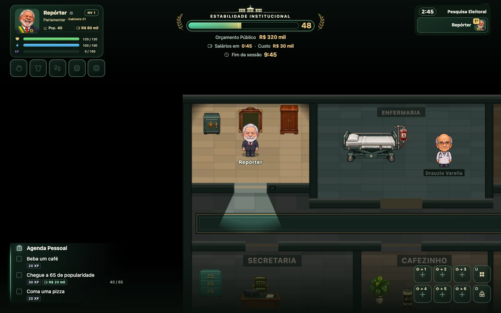

Parlamentares
Mantenham a estabilidade em pelo menos 45 até o fim da sessão ou tirem todos os infiltrados de jogo.
Desktop · 1 a 12 jogadores
Negocie votos, investigue fraudes e descubra quem está sabotando a sessão. Ou torça para ninguém descobrir que é você.
Jogar a prévia ↗
Como jogar
Mantenham a estabilidade em pelo menos 45 até o fim da sessão ou tirem todos os infiltrados de jogo.
Sabotem o Congresso sem entregar seu papel. Derrubem a estabilidade a zero durante a partida ou terminem a sessão abaixo de 45.
Escolha um nick, crie uma sala e mande o link aos amigos. Você pode começar sozinho. Com menos de seis pessoas, bots completam as vagas e também entram no sorteio de papéis.
Consulte os projetos pelo celular, solicite o documento na Secretaria e reúna duas assinaturas. Entregue o documento no Protocolo para abrir a articulação antes da votação.
Use WASD, as setas ou clique no chão para andar. Pressione Tab para consultar a planta. Ao ativar o microfone, a voz perde volume com a distância e com as paredes.
Elenco jogável
O papel é sorteado no início da sessão, independentemente da caricatura escolhida.
Capturas do jogo